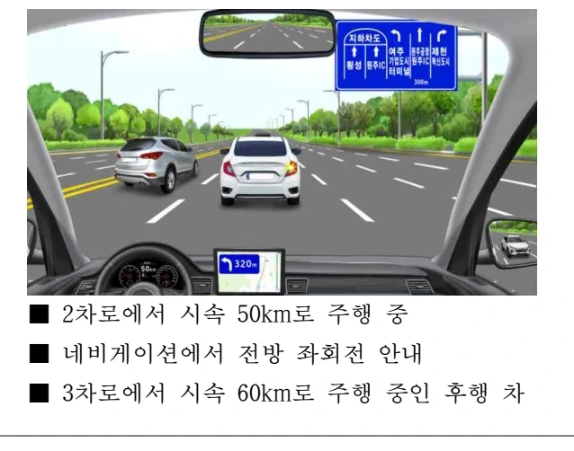

821. 为了向企业城市、客运站方向左转，最安全的两种驾驶方法是？

- ①因为导航提示需要在前方左转，所以提前变更至第一车道。
- ②由于第1、2车道进入地下通道，因此先让第3车道后方车辆通过， 确保安全后再变更到第3车道。
- ③为了获得准确的路线指引，重复操作导航仪。
- ④第3车道有后方车辆，而我的车辆在前，因此不打方向灯， 快速变更车道到其前方。
- ⑤为应对前车急刹，保持安全车距行驶。
查看答案
答案
② 由于第1、2车道进入地下通道，因此先让第3车道后方车辆通过， 确保安全后再变更到第3车道。
⑤ 为应对前车急刹，保持安全车距行驶。
依据
道路交通法实施细则【附表28】 驾驶时请勿操作导航系统，因为这会分散您的注意力并增加发生事故的风险。此外，养成开车时检查路标的习惯，而不是仅仅依靠导航系统来确保安全驾驶。
依据文字为学习用机器翻译。